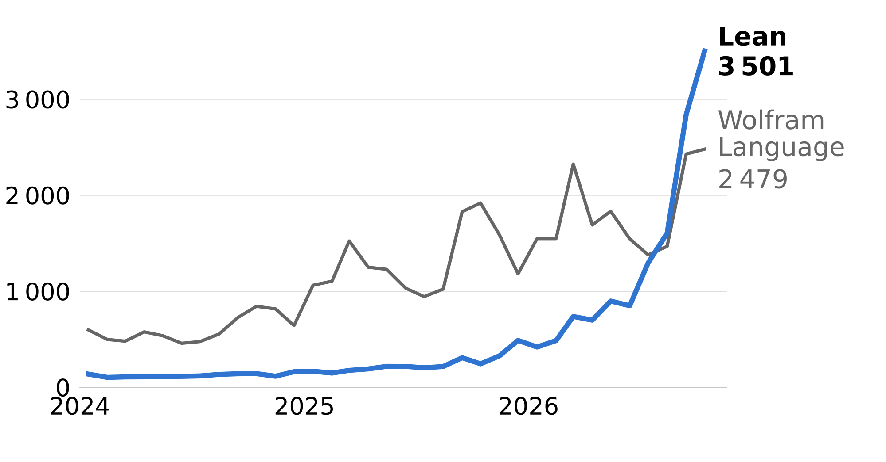
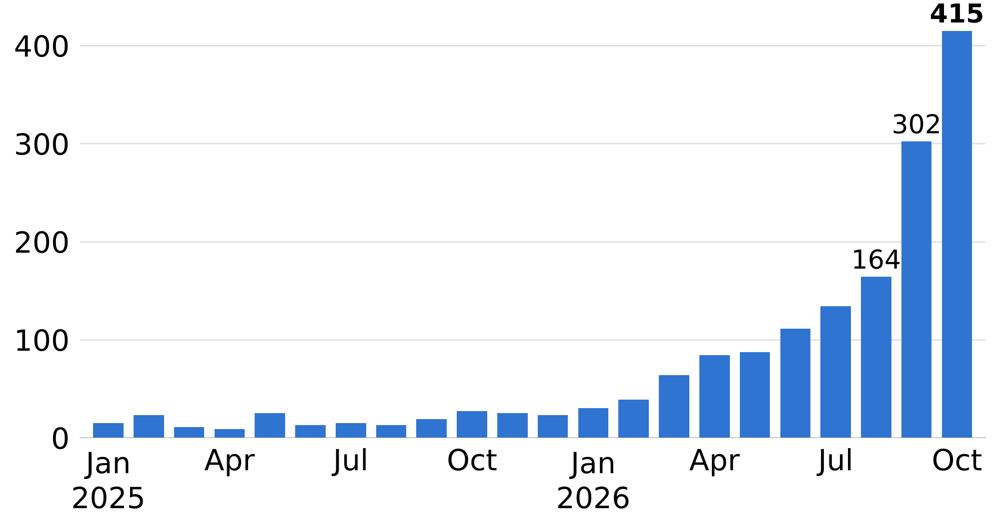

Lua Viana Reis · Universität Bonn
A dependently typed functional programming language...
... which is able to verify mathematical proofs (how?)
... with a proof assistant interface (what is that?)
For mathematicians, it's like a pedantic friend, who only understands if you justify your proofs down to the axioms.
It also gives you many tools to make that task easier.
Roughly: every expression in the language has a type.
To construct or destruct a value of a type, we must obey certain rules of type theory which are checked by the kernel.
#check2 : ℕ (2 : ℕ)
2 : ℕ#check2 + 2 = 4 : Prop (2 + 2 = 4 : Prop)
2 + 2 = 4 : Prop#checkEq.refl (2 + 2) : 2 + 2 = 2 + 2 (by⊢ 2 + 2 = 4 rflAll goals completed! 🐙 : 2 + 2 = 4)
Eq.refl (2 + 2) : 2 + 2 = 2 + 2Lean's type theory is roughly equivalent to ZFC + inaccessible cardinals (M. Carneiro, The Type Theory of Lean, MS thesis, 2019).
Next slide →
It is not the only proof assistant: there is Rocq, Isabelle, Agda, Metamath and many others.
Lean has caught the attention of the mathematical community for some specialties, such as:
the biggest (human reviewed) mathematical library, Mathlib;
some early projects for formalizing advanced mathematics;
infrastructure for supporting large libraries of mathematics (greatly due to the development being tied to Mathlib);
a small kernel.
It's not new;
started in 2013 by Leonardo de Moura at Microsoft Research
2015: Lean 2
2017: Lean 3; the community library Mathlib is started
2021: Lean 4, rewritten as a general-purpose programming language, implemented mostly in Lean itself.
2023: mathlib ported to Lean 4; first stable version of Lean 4; the Lean FRO is founded to develop Lean.
Perfectoid Spaces (Buzzard, Commelin, Massot; 2020)
Liquid Tensor Experiment (led by Commelin and Topaz; 2022)
Sphere Eversion (van Doorn, Massot, Nash; 2023)
Carleson's Theorem (led by van Doorn; 2025)
Sphere Packing (Birkbeck, Hariharan, Lee, Ma, Mehta, Viazovska; 2026/ongoing)
Fermat's Last Theorem (led by Buzzard; ongoing)
Formalizing by hand can force one to think more carefuly about the mathematics and figure out mistakes or insights.
The huge sizes are often due to bad code quality (≠ correctness), but the recent projects would require an enourmous amount of work to be formalized by hand.
Depending on how the autoformalization is done, there is not much more than one bit of information resulting from it.
New GitHub repos per month

arXiv papers with Lean per month

Sources: GitHub search; paperswithlean.com (retrieved 10 Nov 2026). Graphs from F. van Doorn, Formalized mathematics in the age of AI, 11 Nov 2026.
Of those recent research papers using Lean, most formalizations are AI-generated ─ it is now relatively easy to ask AI for that.
Just because a paper includes a Lean proof, that does not mean the paper is correct.
Lean can only check the correctness of a formal proof; whether definitions and statements correspond to their informal notions is necessarily an exercise for the reader.
Mathlib: reviewed and tested definitions
formal-conjectures (of which ~20% were initially misformalized)
Whether a formal proof is a faithful translation of the informal proof is also an exercise for the reader.
Navier–Stokes lost in translation (Bastounis, Circelli, Hansen; 2026)
"Junk values": 1/0 = 0.
Not really a problem for proofs, but can result in wrong statements!1
Kernel bugs.
Mostly a problem for AI formalizations, which could exploit anything.
There are other kernel implementations, one of them with a proof of relative consistency.2
¹ K. Buzzard, Division by zero in type theory: a FAQ, Xena Project blog, 2020. ² J. Breitner et al., con-leche: an external Lean checker with a proof of consistency, 2026.
Comparator is a tool for checking trusted code with the definitions and the statement against an untrusted proof of the statement.
It mostly relies on organization, checking the trustworthy statment separately from a possibly cheating proof, which is checked in a sandbox.
Also see Validating a Lean Proof in the language reference.
Mathlib has now more mathematics than typical undergraduate curriculum.
It does not priorizite extensiveness over other goals: writing theories in their right generality, keeping all areas of math compatible with each other, being maintainable.
Mathlib also provides metaprogramming infrastructure for maths: tactics, linters.
example (a b : ℝ) :
a * b ≤ (a ^ 2 + b ^ 2) / 2 := bya:ℝb:ℝ⊢ a * b ≤ (a ^ 2 + b ^ 2) / 2
nlinarith [sq_nonneg (a - b)]All goals completed! 🐙
example : Continuous fun x : ℝ =>
Real.exp (x ^ 2) + Real.sin x := by⊢ Continuous fun x => Real.exp (x ^ 2) + Real.sin x
fun_propAll goals completed! 🐙
example (x : ℝ) (hx : 0 < x) :
0 < x ^ 3 + Real.sqrt x + 1 := byx:ℝhx:0 < x⊢ 0 < x ^ 3 + √x + 1
positivityAll goals completed! 🐙
example (x : ℝ) (hxVariable name `hx` is not explicitly referenced.
Hint: The binding can be removed (if unused) or named `_` (if used implicitly). Alternatively, prefix the name with `_` to silence this warning:
[apply] _hx
Note: This linter can be disabled with `set_option linter.unusedVariables false` : 0 < x) :
0 < Real.exp x := byx:ℝhx:0 < x⊢ 0 < Real.exp x
positivityAll goals completed! 🐙
Books: Mathematics in Lean, Theorem Proving in Lean 4, The Mechanics of Proof, Functional Programming in Lean
Games: the Natural Number Game and others at adam.math.hhu.de
Zulip: leanprover.zulipchat.com, especially the new members channel
Contribute to Mathlib
Build a trusted library for your corner of mathematics that other researchers can use
It's fun! And type theory is a different way to think about mathematics
Questions
(Extra slides next)
https://lean-lang.org/install/